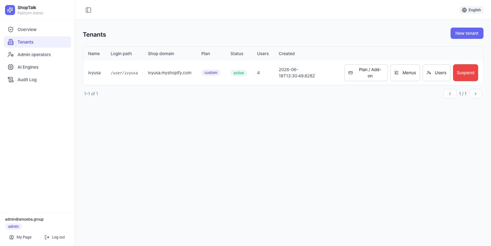
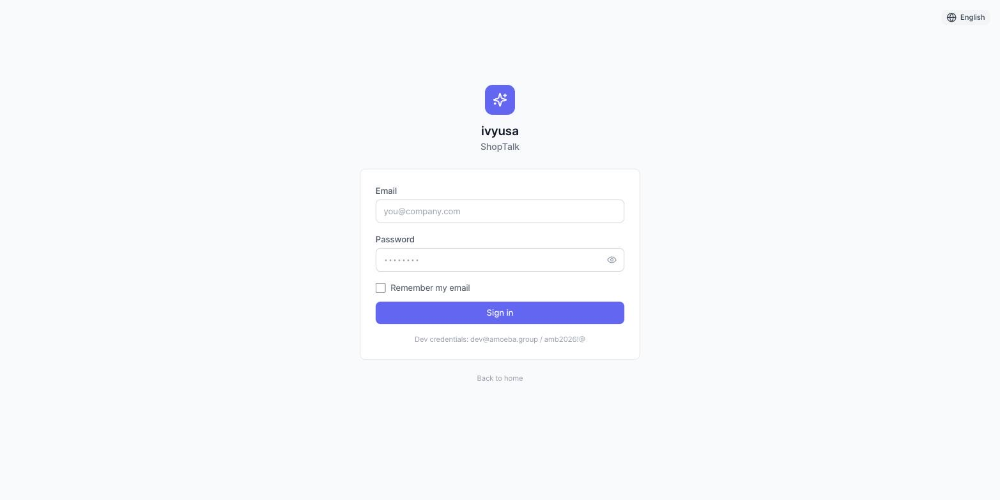
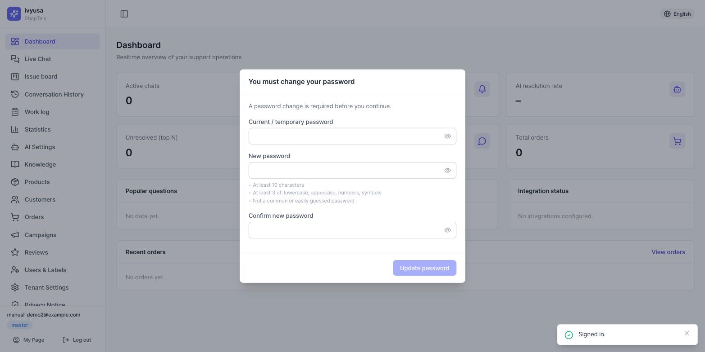
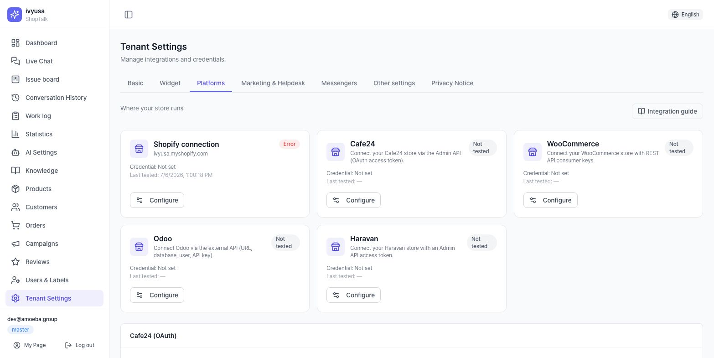
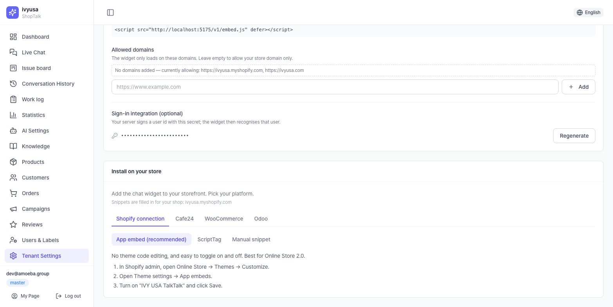
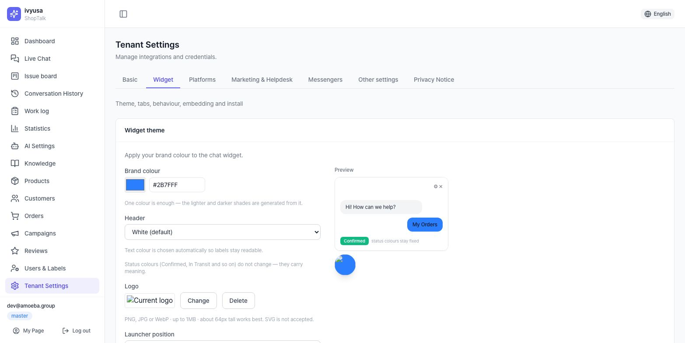

Before You Start
| Tenant | One store hosted on ShopTalk. Data, settings, and knowledge are fully isolated per store. |
| Slug | The tenant's dedicated login URL fragment. Appended to the address like …/ivyusa. |
| Platform administrator | A ShopTalk operator admin who logs in at /admin. Holds tenant-creation rights. |
| Tenant administrator (master) | The highest rank in the store console. Manages all team members, permissions, and settings. |
| Temporary password | A one-time password issued by the system at invite time. Shown on screen only once. |
What you need
- A platform administrator account (
/admin/login) - The shop domain of the store to create (e.g.
example.myshopify.com,mallid.cafe24.com) - The email address of the person to invite as tenant administrator
- Credentials for the platform to integrate (Ch. 3 — prepared by the tenant administrator)
Creating a Tenant
1.1 Create a new tenant
/admin/tenants → [New tenant] → fill the 4 fields in the modal.
| Field | Required | Description |
|---|---|---|
| Name | ✅ | Display name of the store |
| Login path (slug) | — | Auto-derived from the name if left blank. Lowercased automatically when typed |
| Shop domain | ✅ | The store's primary domain — shared across all platforms |
| Plan | ✅ | starter / growth / enterprise / custom — the default menus provided differ by plan. After creation, change it via [Plan & add-ons] on the tenant row (incl. the issue-workflow add-on base/bridge/native) |
Lowercase letters, digits, and hyphens only; it cannot collide with console screen names (reserved words such as admin, login, dashboard, settings).
If you enter a reserved word, the server automatically appends a -shop suffix. Since the slug is the login URL itself, choose a value the store can remember easily.

1.2 (Optional) Adjust provided menus
On the tenant row, [Provided menus] → three-way choice per menu: Follow plan (default) / Force provide / Block.
The result column updates immediately, and exceptions show a *.
A menu blocked here stays invisible even if the tenant master grants rank permissions for it (2-tier: admin provisioning → tenant-internal permissions). The issue board also requires the workflow mode to be configured.
1.3 Invite the tenant administrator + issue a temporary password
- On the tenant row, [Users] → [Invite user]
- Enter the
email; keeprankat the default master (this is the first administrator) - [Invite] → a temporary password modal appears immediately — copy the value
┌─ Temporary password issued ────────────────┐
│ Temporary password for user@shop.com │
│ ┌────────────────────────┐ │
│ │ IvyXXXXXXXXX! │ [Copy] │
│ └────────────────────────┘ │
│ ⚠️ This value is shown only once, now. │
└────────────────────────────────────────────┘The administrator must copy the value shown once in the modal and deliver it directly. If you closed the window and lost the value, reissue it with the [Temp password] button on that user's row (the previous value is invalidated).
![The temporary password modal, shown only once right after the invite — [Copy] and deliver via a secure channel](img/admin-temp-password.en.jpg)
Never leave the password in an email body or a group chat. Deliver it via a 1:1 secure messenger or a phone call,
and the creation procedure is complete only after confirming the first login (= forced change). Every issuance is recorded in the audit log (/admin/audit).
1.4 Hand over the login URL
[Copy] the login page URL (https://…/slug) from the card at the top of the same screen and hand it over together.
Three things to deliver — ① login URL ② email (account ID) ③ temporary password
First Login
2.1 Log in
Opening the URL you received shows a login screen bearing the store name. Sign in with the email + temporary password.
If you see "store not found", check the spelling of the slug in the URL. Turn on Remember email and this browser will pre-fill the email next time.

2.2 Forced password change
Immediately after login, a non-dismissable password change dialog appears (it cannot be cancelled — the console cannot be used with a temporary password).
- Enter the current (temporary) password + new password + confirmation
- The 3 rules show live ✓/✕: ① at least 10 characters ② at least 3 of: uppercase·lowercase·digits·special characters ③ not a common password
- Passwords containing your own email, or identical to the previous one, are rejected by the server

2.3 MFA (two-factor authentication) enrollment
| TOTP | The 6-digit code an authenticator app (Google Authenticator, etc.) generates every 30 seconds |
| Recovery codes | 10 one-time codes to use if you lose the authenticator app — shown only once, right after enrollment |
The master and director ranks are required to enroll MFA (TOTP) by security policy. Before the enforcement date there is a grace banner at the top (enroll early from My Page); after it, the console is blocked until you enroll.
Enrollment: scan the QR (or enter the manual key) → type the app's 6-digit code → download & store the 10 recovery codes → done. From then on, every login asks for the 6-digit code as an extra step.
Be sure to save them. If you lose both the authenticator app and the recovery codes, only an administrator's (system admin or store master) [Reset MFA] can unlock you.
Commerce Platform Integration
Settings is now organised into 7 tabs: Basic settings (AI engines·usage·storefront·agent handoff) / Widget settings / Platform integrations / Marketing & helpdesk / Messenger channels / Other settings / Privacy notice. This chapter is the Platform integrations tab; Chapter 4 is the Widget settings tab. The [Integration guide] button at the top right of the tab explains where to find each platform's credentials.
After saving credentials the status is "Not tested". It becomes "Connected" only when [Test connection] passes ("Error" on failure).
| Credential | Keys/tokens for platform API access. Stored encrypted; after saving, only "Configured" is shown |
| Test connection | A button that makes one real API call with the saved credentials to verify their validity |
| Sync | The job that pulls the platform's order·product data into the ShopTalk cache |

3.1 Cafe24 — OAuth connection (recommended) ✅
- In the Cafe24 (OAuth) card of the Platform integrations tab, enter the
mall ID(the mallID part ofmallID.cafe24.com) - [Connect] → the Cafe24 authorization page → sign in and approve → automatically returned to the console
- Confirm the Connected badge, then run [Sync now] (orders) / [Import products]
Product sync fills only the product cache. For the AI to use these products in answers, you must separately run Sync from catalog (preview → run) on the [Knowledge] screen — see Ch. 2.2 of the Part 2 manual. If you already hold a token, you can also enter it manually in the Cafe24 tile’s modal, but the OAuth connection is the standard.
3.2 Shopify ✅
The Shopify tile’s modal: shop domain (required, *.myshopify.com) ·
Admin API Access Token (required) · API Key/Secret (optional).
After saving, run [Test connection] → [Sync now] → [Register webhooks] in that order. Webhooks must be registered for order·shipping status changes to reach widget notifications in real time.
3.3 Odoo · WooCommerce · Haravan ✅
Enter the credentials in each tile’s modal (Odoo: server URL / DB name / username / API Key),
pass [Test connection], then pull data with [Import products] / [Sync orders] in the same modal.
For the AI to use the imported products, the catalog sync on [Knowledge] is still required separately (same as the tip in 3.1).
3.4 Storefront URL
Enter the store's customer-facing site address in the Storefront card on the Basic settings tab. If unset, the widget's product links are disabled (the card shows a warning).
Other integrations — Klaviyo·Yotpo (marketing) and Gorgias (helpdesk) live on the Marketing & helpdesk tab; messenger channels (Telegram·Viber·Gmail, etc.) on the Messenger channels tab — the same kind of tiles/cards.
Chat Widget Setup & Installation
4.1 Install the widget
In the installation guide card, pick the platform tab (Shopify / Cafe24 / WooCommerce / Odoo) to see that platform's installation snippet and step-by-step guide (every code block has a copy button).
- Shopify: 3 methods — app embed (recommended) / ScriptTag / manual install
- Cafe24: a dedicated snippet to paste into the mall design (includes the member login path)
- WooCommerce: a PHP snippet for
functions.php/ Odoo: a generic HTML snippet
In the Embed & SDK card, copy the universal installation snippet (embed.js),
manage allowed domains (if left blank, the storefront URL applies),
and generate the signing secret (for member identity federation).
Copy it immediately and hand it to the shop's server engineer.

The surest verification is to open the live shop page and check that the launcher (speech-bubble button) appears at the bottom right.

4.2 Copy & behavior (widget behavior card)
| Item | Description |
|---|---|
| Login method | redirect (go to the shop login page and return, default) / popup |
| Timezone | The store's timezone — used for business-hours display, etc. |
| Display name | The store name shown in the widget header (max 80 characters) |
| First-visit greeting / post-login greeting | Written across 6 language tabs (EN/ES/KO/VI/JA/ZH) (max 500 characters) — the shipped default is shown under the field as "Default copy:" |
If a greeting is left empty for a language, the default copy is used. It is fine to write one primary language carefully first and fill in the rest later.
4.3 Tabs & theme
Widget tabs card: choose which of the 3 tabs — notifications / orders / chat — to show (at least 1 must remain — the last one cannot be unchecked); tab position is top/bottom.
Widget theme card: brand color (picker/HEX) · header style (white/brand color) · logo upload · launcher position (left/right)·size (sm/md/lg)·icon (chat/question mark/headset/logo). Verify instantly in the preview on the right.
You only need to pick one brand color. Lightness steps and text colors are computed automatically against the contrast standard (4.5:1). A saved theme takes effect from the customer's next widget session.

Minimum AI Configuration
| Persona | Text describing the AI assistant's tone·attitude·principles. Sets the tone of every AI answer |
| Response rules | The list of rules the AI must obey (one line = one rule) |
| Engine | The AI model that generates answers. Choose among those registered by the platform administrator |
| stub | A demo responder that works without a real AI key — not production quality |
- Describe the store introduction·tone·prohibitions in the bot persona card and save (e.g. "You are the friendly, concise assistant of OO Mall. Answer only from the provided knowledge.")
- Register at least 2–3 response rules (e.g. "Never state that a refund is complete")
- Check the applied engine in the AI functions card — a
stubbadge means no real engine is connected. Either ① register your own engine with your own API key in the AI engines card of [Tenant Settings → Basic settings] (takes priority over platform engines; billed to your account), or ② ask the platform administrator to register a shared engine (/admin/ai-engines)
The scenario buttons (the quick menu at the bottom of the widget) come with 6 defaults (Delivery Status·Cancel / Refund·Product Help·Contact Support·Affiliate·My Orders) applied automatically with labels in all 6 languages, so you do not need to touch them at the setup stage.

Initial Knowledge Entry
The AI answers only from registered knowledge. Without knowledge, most questions get handed to agents, so fill in the core policy knowledge at the setup stage. The fastest path is the universal counsel guide.
- In the group tabs above the documents card, pick CounselInfo → [Bulk import] → download the universal counsel guide (a ready-made starter counsel KB, ~90 rows) as CSV/XLSX from the highlighted block
- Adjust deadlines·fees·policies to your store → upload it in the same dialog → check the created/updated counts. Shipping·cancellation/refund·exchange/return·FAQ get filled in one pass, and re-uploading the edited file updates without duplicates (round-trip)
- Register individual documents via [Write on board] (recommended — publish, then [Adopt to KB]) or [Add KB-Document] (for urgent fixes)
- In the knowledge QA panel on the right, type questions a customer would ask and check the answer·sources·confidence — if the document you just registered appears in the source list, you succeeded
Including the phrasing customers actually use (e.g. "how long does shipping take") in document titles and bodies raises search hit rates. The knowledge board workflow, bulk product knowledge, AI import (pdf·docx·md·YouTube), external sources, and quality management are covered in the Part 2 manual.

(Optional) Team Invites & Handoff Settings
- Invite team members: [Users] menu → [Invite user] → choose email·rank (director/manager/staff)·duty labels → the same temporary password modal as in Ch. 1 (shown once·deliver directly). Per-menu access is adjusted per rank in the Menu access card of [Tenant Settings → Other settings] (master only).
- Agent handoff: in the Agent handoff card of [Tenant Settings → Basic settings], assign the responsible agents·working hours·off-hours forwarding email — details in Ch. 5 of the Part 2 manual.
Completion Checklist
- Tenant created + administrator invited·temp password delivered (admin)
- First login → password changed → MFA enrolled
- Platform integration: credentials saved + connection test passed (status "Connected") + (Shopify) webhooks registered
- Storefront URL configured (Basic settings tab)
- Widget snippet installed → launcher confirmed visible on the live shop
- Display name·greetings written
- Persona·response rules saved; AI engine confirmed not
stub - Universal counsel guide uploaded (or 3+ core policy documents registered) → answers verified in the QA panel
- Asked a question directly in the widget and confirmed AI answer + sources (end-to-end)
Troubleshooting
- Q. I cannot log in (temporary password).
- Reissuing a temporary password invalidates the previous value. Make sure you have the latest issuance; if it still fails, ask the administrator to reissue. Also check that the slug in the login URL is not another store's.
- Q. I closed the temporary password window.
- The value cannot be viewed again. Reissue it with the [Temp password] button on the user's row.
- Q. The widget does not appear on the shop.
- Check, in order: ① the snippet is on the actually deployed page ② the domain is included in the allowed domains ③ refresh the browser cache.
- Q. AI answers feel oddly mechanical.
- Check whether the AI functions card shows a
stubbadge. The stub is a demo responder. Register your own engine in the AI engines card of [Tenant Settings → Basic settings], or ask the platform administrator for a shared one. - Q. The AI keeps handing off to "connect to an agent".
- Most likely there is no knowledge document on that topic, or it is inactive. Register documents as in Ch. 6 and verify with the QA panel.
- Q. I changed settings but the widget looks the same.
- Widget settings (copy·theme·tabs) take effect from the customer's next session. Close and reopen the widget, or refresh the page.